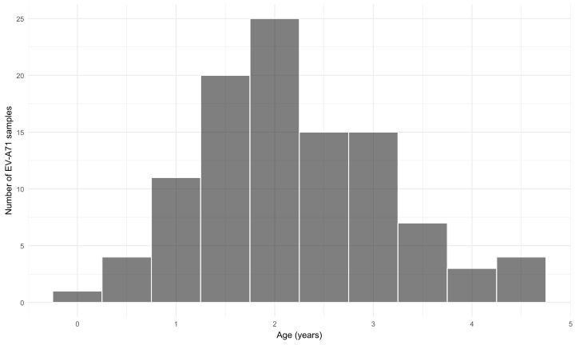
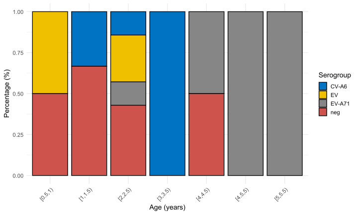
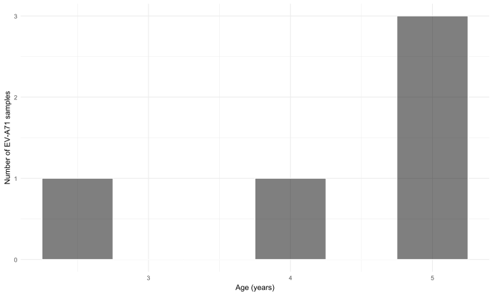

Code
library(gtsummary)
library(dplyr)
library(stringi)
library(ggplot2)
library(lubridate)
library(tidyr)
library(paletteer)
library(mgcv)
invisible(Sys.setlocale("LC_TIME", "English"))library(gtsummary)
library(dplyr)
library(stringi)
library(ggplot2)
library(lubridate)
library(tidyr)
library(paletteer)
library(mgcv)
invisible(Sys.setlocale("LC_TIME", "English"))library(readxl)
viro_df <- read_excel("D:/OUCRU/hfmd/data/03EI Data 2023 shared.xlsx")viro2 <- viro_df %>%
mutate(city = City %>%
trimws(which = "both") %>%
stri_trans_general("latin-ascii") %>%
tolower(),
sero_gr = case_when(
SeroGroup1 == "ENT" ~ "EV",
SeroGroup1 != "ENT" ~ SeroGroup1
),
admission_date = as.Date(DateAdmission),
age_adm = interval(DateBirth, admission_date) / years(1),
adm_month = month(admission_date,label = TRUE),
adm_month2 = as.Date(floor_date(admission_date, "month"))%>% as.character(),
age_bin = cut(age_adm,
breaks = seq(0, max(age_adm, na.rm = TRUE) + 0.5, by = 0.5),
right = FALSE)) %>%
select(city,sero_gr,admission_date,adm_month,adm_month2,age_adm,age_bin,DateBirth)
viro2$city <- factor(viro2$city,
levels = c("tp hcm",viro2$city[!viro2$city == "tp hcm"] %>%
unique()))
viro2 %>%
tbl_summary(by=sero_gr,
include = c(city,sero_gr))| Characteristic | CV-A10 N = 11 |
CV-A6 N = 91 |
EV N = 161 |
EV-A71 N = 2981 |
neg N = 361 |
Other N = 11 |
|---|---|---|---|---|---|---|
| city | ||||||
| tp hcm | 0 (0%) | 4 (44%) | 4 (25%) | 110 (37%) | 18 (50%) | 1 (100%) |
| long an | 0 (0%) | 0 (0%) | 0 (0%) | 25 (8.4%) | 0 (0%) | 0 (0%) |
| hau giang | 0 (0%) | 0 (0%) | 2 (13%) | 19 (6.4%) | 2 (5.6%) | 0 (0%) |
| kien giang | 0 (0%) | 0 (0%) | 1 (6.3%) | 2 (0.7%) | 2 (5.6%) | 0 (0%) |
| binh duong | 0 (0%) | 0 (0%) | 0 (0%) | 13 (4.4%) | 2 (5.6%) | 0 (0%) |
| dong nai | 0 (0%) | 0 (0%) | 0 (0%) | 9 (3.0%) | 0 (0%) | 0 (0%) |
| dong thap | 1 (100%) | 0 (0%) | 0 (0%) | 13 (4.4%) | 1 (2.8%) | 0 (0%) |
| an giang | 0 (0%) | 0 (0%) | 3 (19%) | 14 (4.7%) | 2 (5.6%) | 0 (0%) |
| khanh hoa | 0 (0%) | 0 (0%) | 0 (0%) | 0 (0%) | 1 (2.8%) | 0 (0%) |
| tay ninh | 0 (0%) | 1 (11%) | 2 (13%) | 13 (4.4%) | 1 (2.8%) | 0 (0%) |
| tien giang | 0 (0%) | 1 (11%) | 2 (13%) | 16 (5.4%) | 5 (14%) | 0 (0%) |
| ba ria | 0 (0%) | 1 (11%) | 0 (0%) | 1 (0.3%) | 0 (0%) | 0 (0%) |
| binh thuan | 0 (0%) | 1 (11%) | 0 (0%) | 3 (1.0%) | 0 (0%) | 0 (0%) |
| ca mau | 0 (0%) | 0 (0%) | 2 (13%) | 13 (4.4%) | 0 (0%) | 0 (0%) |
| tra vinh | 0 (0%) | 0 (0%) | 0 (0%) | 9 (3.0%) | 1 (2.8%) | 0 (0%) |
| can tho | 0 (0%) | 0 (0%) | 0 (0%) | 22 (7.4%) | 0 (0%) | 0 (0%) |
| binh phuoc | 0 (0%) | 0 (0%) | 0 (0%) | 1 (0.3%) | 0 (0%) | 0 (0%) |
| bac lieu | 0 (0%) | 0 (0%) | 0 (0%) | 3 (1.0%) | 1 (2.8%) | 0 (0%) |
| vinh long | 0 (0%) | 0 (0%) | 0 (0%) | 6 (2.0%) | 0 (0%) | 0 (0%) |
| dak lak | 0 (0%) | 1 (11%) | 0 (0%) | 0 (0%) | 0 (0%) | 0 (0%) |
| soc trang | 0 (0%) | 0 (0%) | 0 (0%) | 3 (1.0%) | 0 (0%) | 0 (0%) |
| thua thien hue | 0 (0%) | 0 (0%) | 0 (0%) | 1 (0.3%) | 0 (0%) | 0 (0%) |
| ben tre | 0 (0%) | 0 (0%) | 0 (0%) | 2 (0.7%) | 0 (0%) | 0 (0%) |
| 1 n (%) | ||||||
link <- "https://data.opendevelopmentmekong.net/dataset/999c96d8-fae0-4b82-9a2b-e481f6f50e12/resource/2818c2c5-e9c3-440b-a9b8-3029d7298065/download/diaphantinhenglish.geojson?fbclid=IwAR1coUVLkuEoJRsgaH81q6ocz1nVeGBirqpKRBN8WWxXQIJREUL1buFi1eE"
vn_spatial <- sf::st_read(link) %>% mutate(
city =
case_when(
Name == "TP. Ho Chi Minh" ~ "tp hcm",
Name != "TP. Ho Chi Minh" ~ Name
) %>%
trimws(which = "both") %>%
stri_trans_general("latin-ascii") %>%
tolower()
)
viro2 %>%
filter(sero_gr == "EV-A71") %>%
group_by(city,sero_gr) %>%
count() %>%
ungroup() %>%
full_join(.,vn_spatial, by = join_by(city)) %>%
ggplot() +
geom_sf(aes(fill = n,geometry = geometry))+
paletteer::scale_fill_paletteer_c("ggthemes::Classic Red",
na.value="white",
name = "Numbers of EV-A71 samples")+
theme_void()+
theme(legend.position="bottom")
viro2 <- viro2 %>% filter(city == "tp hcm")
viro_count_p <- viro2 %>%
mutate(adm_month = as.Date(floor_date(admission_date, "month"))) %>%
group_by(adm_month,sero_gr) %>%
count() %>%
ungroup() %>%
group_by(adm_month) %>%
mutate(perc = n / sum(n)) %>%
ungroup
viro_count_p %>%
ggplot(aes(x = adm_month,y=n,fill = sero_gr))+
geom_col()+
scale_x_date(date_labels = "%b",
date_breaks = "1 month",
limits = c(as.Date("2023-05-01"),
as.Date("2023-12-01")))+
labs(fill = "Sero group", y = "Number of samples",x = "Month of admission")+
theme_minimal()+
theme(legend.position="bottom")viro_count_p %>% filter(sero_gr == "EV-A71") %>%
ggplot(aes(x = adm_month,y=perc))+
geom_col()+
scale_x_date(date_labels = "%b",
date_breaks = "1 month",
limits = c(as.Date("2023-05-01"),
as.Date("2023-12-01")))+
labs(y = "Percentage of EV-A71 samples",x = "Month of admission")+
theme_minimal()+
theme(legend.position="bottom")
Based on the figure 1, I separate sample from June - Aug as the 1st peak, and from Sep-Dec as the 2nd peak
viro2 %>%
mutate() %>%
na.omit() %>%
filter(month(adm_month2) >= 6 & month(adm_month2) <= 8) %>%
na.omit() %>%
group_by(age_bin, sero_gr) %>%
summarise(n = n(), .groups = "drop_last") %>%
mutate(perc = n / sum(n)) %>%
ungroup() %>%
ggplot(aes(x = age_bin, y = perc, fill = sero_gr)) +
geom_col(position = "stack", color = "black") +
ggsci::scale_fill_jco() +
labs(x = "Age (years)", y = "Percentage (%)", fill = "Serogroup") +
theme_minimal(base_size = 14) +
theme(
axis.text.x = element_text(angle = 45, hjust = 1)
)viro2 %>%
mutate() %>%
na.omit() %>%
filter(month(adm_month2) >= 6 & month(adm_month2) <= 8) %>%
na.omit() %>%
filter(sero_gr == "EV-A71") %>%
ggplot(aes(age_adm)) +
geom_histogram(binwidth = 0.5,
color = "white",fill = "black",alpha = 0.5)+
labs(x = "Age (years)", y = "Number of EV-A71 samples") +
theme_minimal()
viro2 %>%
mutate() %>%
na.omit() %>%
filter(month(adm_month2) >= 9) %>%
na.omit() %>%
group_by(age_bin, sero_gr) %>%
summarise(n = n(), .groups = "drop_last") %>%
mutate(perc = n / sum(n)) %>%
ungroup() %>%
ggplot(aes(x = age_bin, y = perc, fill = sero_gr)) +
geom_col(position = "stack", color = "black") +
ggsci::scale_fill_jco() +
labs(x = "Age (years)", y = "Percentage (%)", fill = "Serogroup") +
theme_minimal(base_size = 14) +
theme(
axis.text.x = element_text(angle = 45, hjust = 1)
)
viro2 %>%
mutate() %>%
na.omit() %>%
filter(month(adm_month2) >= 9) %>%
na.omit() %>%
filter(sero_gr == "EV-A71") %>%
ggplot(aes(age_adm)) +
geom_histogram(binwidth = 0.5,
color = "white",fill = "black",alpha = 0.5)+
labs(x = "Age (years)", y = "Number of EV-A71 samples") +
theme_minimal()
library(stringr)
df1 <- read_excel("D:/OUCRU/hfmd/data/TCM_full.xlsx",
col_types = c("date", "numeric", "text",
"text", "text", "date", "date", "date",
"text", "text", "text"))
colnames(df1) <- c("dob", "age", "gender", "commune", "district",
"reported_date", "onset_date","adm_date",
"medi_cen","inout","severity")
df1$dob <- df1$dob %>% as_date()
df1$adm_date <- df1$adm_date %>% as_date()
df1$age1 <- interval(df1$dob, df1$adm_date) / years(1)
df1$adm_week <- as.Date(floor_date(df1$adm_date, "week"))
df1$district <- df1$district %>% str_replace_all(
c( "Quáºn Gò vấp" = "Quáºn Gò Vấp"))
df1$district <- df1$district %>%
str_remove("Quáºn|Huyện|Thà nh phố") %>%
trimws(which = "both")
incidence1 <- df1 %>%
filter(year(adm_date) == 2023 &
medi_cen %in% c("Bệnh viện Nhi đồng 1",
"Bênh viện Nhi Đồng 1",
"Bệnh viện Nhi Đồng 1")) %>%
mutate(district2 = district %>%
str_replace_all(
c("Quáºn 2" = "Thủ Đức",
"Quáºn 9" = "Thủ Đức")) %>%
str_remove("Quáºn|Huyện") %>%
trimws(which = "both") %>%
stri_trans_general("latin-ascii") %>%
tolower()) %>%
mutate(adm_date2 = as.numeric(adm_date),
cohort = interval(dob, "2023-01-01") / years(1)) %>%
select(adm_date2,cohort,adm_week)
time_f <- incidence1 %>%
group_by(adm_week) %>%
count() %>%
ungroup()
viro2 <- viro2 %>%
mutate(pos = case_when(
sero_gr == "EV-A71" ~ TRUE,
sero_gr != "EV-A71" ~ FALSE),
peak = case_when(
month(admission_date) >= 6 & month(admission_date) <= 8 ~ "6/2023 - 8/2023",
month(admission_date) >= 9 ~ "9/2023 - 12/2023"
),
adm_week = as.Date(floor_date(admission_date, "week")),
adm_month = as.Date(floor_date(admission_date, "month")),
time = as.numeric(adm_month)
)
dt_vr <- viro2 %>%
group_by(adm_month) %>%
count(pos) %>%
ungroup() %>%
pivot_wider(names_from = pos,values_from = n,names_prefix = "pos") %>%
replace(is.na(.),0) %>%
mutate(total = posTRUE+posFALSE,
per = posTRUE/total,
time = adm_month %>% as.numeric())
modelll <- gam(pos~s(time,bs = "bs",k=7),family = binomial,method = "REML",data = viro2)
link_inv <- modelll$family$linkinv
recon_epicurve <- modelll %>%
predict(list(time = time_f %>%
filter(adm_week >= min(viro2$admission_date)) %>%
pull(adm_week) %>% head(-4) %>%
as.numeric()
),se.fit = TRUE) %>%
as_tibble() %>%
mutate(time = time_f %>%
filter(adm_week >= min(viro2$admission_date)) %>%
pull(adm_week) %>% head(-4),
lwr = link_inv(fit - 1.96*se.fit),
upr = link_inv(fit + 1.96*se.fit),
fit = link_inv(fit)
) %>%
select(-se.fit) %>%
left_join(time_f,., by = join_by(adm_week == time)) %>%
mutate(e_ev71 = fit*n,
e_ev71_lwr = lwr*n,
e_ev71_upr = upr*n) %>%
replace(is.na(.),-1) %>%
ggplot(aes(x = adm_week))+
geom_line(aes(y = fit*1000))+
geom_ribbon(aes(y = fit*1000,ymin = lwr*1000,ymax = upr*1000),fill = "blue",alpha = .3)+
geom_line(aes(y = e_ev71))+
geom_ribbon(aes(y = e_ev71_upr,ymin = e_ev71_lwr,ymax = e_ev71_upr),fill = "red",alpha = .7)+
scale_y_continuous(
name = "CH1 admission",
sec.axis = sec_axis(~ . /1000, name = "EV-A71 percentage"),
limits = c(0,1000)
) +
geom_col(aes(y=n),alpha = 0.3)+
geom_point(data = dt_vr, aes(x = adm_month,y = per*1000))+
scale_x_date(date_breaks = "1 month",
date_labels = "%b",
limits = c(as.Date("2023-01-01"),as.Date("2023-12-31")))+
theme_minimal()+
theme(axis.title.y = element_text(size = 18),
axis.title.x = element_blank(),
axis.ticks.x = element_blank(),
legend.position = "bottom",
plot.tag = element_text(face = "bold", size = 18),
axis.text.x = element_text(size = 15),
axis.text.y = element_text(size = 18),
legend.text = element_text(size = 15),
legend.title = element_text(size = 18))
recon_epicurve